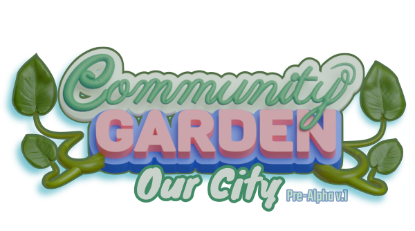

Community Garden - Our City is a game about bringing the community together to fight the nasty pollution in "OUR" city. Clean up empty lots and start gardens to attract community interest. Pickup trash used with recycling and repurposing materials for building/crafting. Earn coins and unlock new areas. Watch the city visually change before your eyes!
The Game being developed by a solo developer. The prototype was created during the Green Web Game Jam.